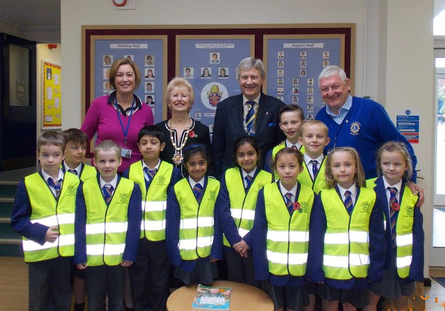

Its a simple idea designed to encourage people to keep their basic personal and medical details on a standard form and in a common location – the fridge!
It saves the Emergency Services valuable time if they need to enter a property in an emergency situation. Not only does it help to identify who you are it also identifies if you have special medication or allergies. It is not only a potential lifesaver, but also it provides peace of mind to you, your friends and family by knowing that prompt medical treatment is provided and that the next of kin and emergency contacts are notified.
Whilst it is focused on the more vulnerable people in a community, anyone can have an accident in the home, so this scheme can benefit anyone.
When ordering one bottle the scheme is free to the public and is funded by Woking local Lions Club.
You may find the bottles displayed in your local GP’s surgery, Local Pharmacy, Local Lions Club. If you have any difficulty locating a bottle please contact Lions Clubs Headquarters 0845 833 2747.
All Emergency Services are aware of the Message in a Bottle scheme, by displaying the green stickers in your home, the emergency services will locate the bottle in the fridge and use the forms inside to ensure you are treated quickly which can save time and save lives.
form you fill in with your name, medicines, allergies & relatives contact details. And also two green stickers.
Fill in the form which is in the bottle and replace it in the bottle. Put the bottle in your fridge. Put one green sticker on your fridge door and the other green sticker on the INSIDE of your house door.
Woking lions president John Cooperand Lion Roger Chamberlain presented to the Citizen Advice Manager and Project Administrator a cheque of £3,000 from its Project Wenceslas campaign in April 2017 to help local families in need in keeping their homes heated. Woking Lions have also given Runnymede CA Office, in Addlestone, £1,200 for the same purposes.
The funds are raised from donations by the general local public who divert their home heat allowance to this very worthy cause. The event is an annual pet campaign with Lions' Club in Surrey and one of the many projects the club is involved in making Woking and district a better place to live.
Project Wenceslas will be run again over the Winter of 2017/18, by Woking Lions and Woking CA Office. If you would like to donate any or all of your Government allowance this coming winter this can be made by bank transfer -see our separate form on the web site, or by sending your cheque payable to Woking Lions Club and marked on the back CA - Project Wenceslas to Appleby, Bury Lane, Horsell Woking GU21 4RT.
In just about any dresser drawer, one can find a pair of spectacles that are no longer being used. That same pair of spectacles can change another person's life.
That's why we started the Lions Recycle for Sight programme. Everyone can help.
Throughout the year, Lions, Leos and other volunteers collect used spectacles and deliver them to regional Lions Eyeglass Recycling Centres (LERCs). LERC volunteers clean, sort by prescription strength and package the glasses. Most of the recycled glasses are distributed to people in need in developing countries where they will have the greatest impact.
You can drop off your usable eyewear at Lions-sponsored collection boxes in Sainsbury or Bayfields in Woking Town Centre and Woking Hospice. For information specific to locations in your community, contact us on 0845 8332747.

Woking Lions have been presenting local schools with Hi-Viz jackets as part of the ongoing campaign to "helping to keep our children safe" in the Borough.
Between 2013 and 2016 Woking Lions have given more than 900 Hi-Viz jackets to more than 30 junior schools accross the area, often with the help of our local Mayor of Woking or our local MP, to keep their children safe when on outings.
